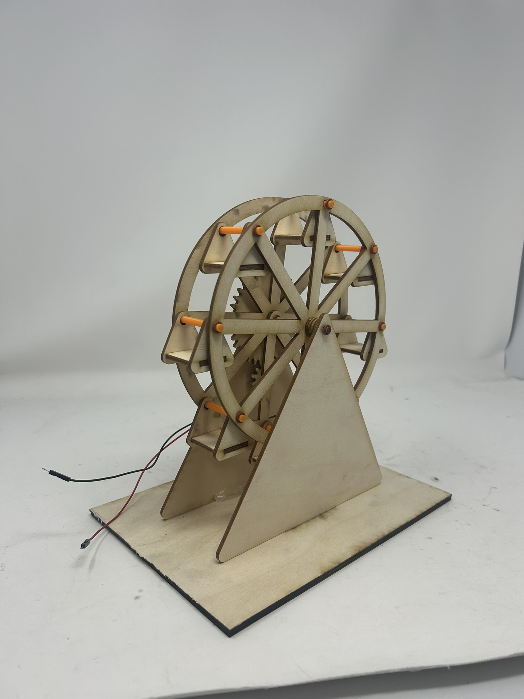
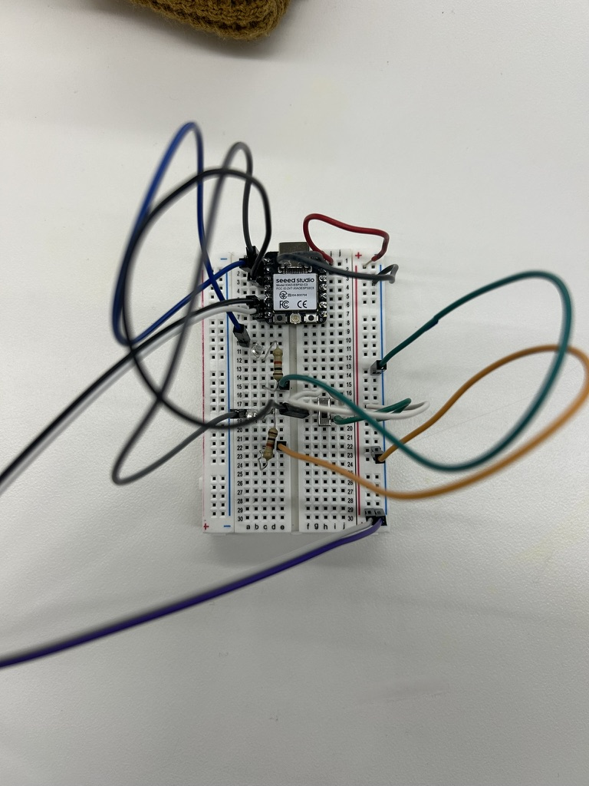
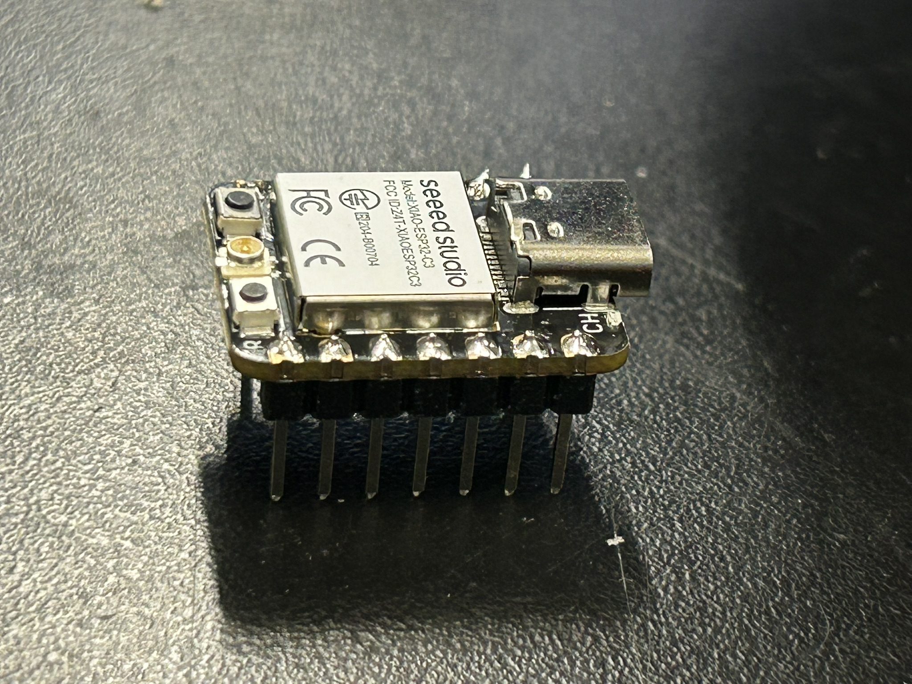

<div class="textcontainer">
<p class="margin"> </p>
<h3>Week 3: Kinetic Sculpture</h3>
<p class="margin"> </p>
<h4>The Ferris Wheel</h4>
<p></p></img>
<p>For this week's assignment, I built a kinetic ferris wheel sculpture powered by a motor. The wheel is laser cut from 3.5mm wood and driven by a gear mechanism that transfers the motor's rotation to spin the wheel. I also soldered header pins onto my microcontroller this week and wrote some basic code to control the motor.</p>
<p class="margin"> </p>
<h4>Design & Fabrication</h4>
<iframe src="https://college1051.autodesk360.com/shares/public/SH90d2dQT28d5b602811eefbe964623ee906?mode=embed" width="640" height="480" allowfullscreen="true" webkitallowfullscreen="true" mozallowfullscreen="true" frameborder="0"></iframe>
<p>I designed all the parts in Fusion 360 and laser cut them from 3.5mm wood. The ferris wheel structure consists of the main wheel, a triangular base, support arms, and hanging seats. For the seat poles, I ran out of appropriate stock material in the lab, so my classmate Jessica helped me 3D print custom poles — a good reminder that fabrication often means mixing processes depending on what's available.</p>
<p>The base went through one revision during assembly. My first version was too short, which meant the seats were hitting the ground as the wheel turned. I redesigned and cut a taller triangular base to give the wheel enough clearance. I also found that the laser cutter's kerf had removed slightly more material than I had accounted for, making some joints looser than expected — I reinforced these with hot glue to reduce wobble.</p>
<p>The seats were another challenge — they kept sliding down the poles during testing. I solved this by threading small rubber rings onto the poles beneath each seat, giving them something to rest on and stopping the slipping. A simple fix, but it made a big difference in how the sculpture looked in motion.</p>
<p class="margin"> </p>
<h4>Electronics</h4>
<p></p></img>
<p>The motor is wired through a motor driver board, which sits between the microcontroller and the motor and allows the code to control direction and speed without pulling too much current through the microcontroller directly. The motor is powered by a separate power source rather than off the microcontroller's onboard power.</p>
<p class="margin"> </p>
<h4>Code</h4>
<p>I wrote a basic program to control the motor through the motor driver. The program makes it so that when the switch is flipped, the motor turns on and runs for 5 seconds and has a red LED light on. Then after 2 seconds, the motor stops turning the wheel and a green LED turns on. This is supposed to mimic when people can get on (green light) and when they can't (red light).</p>
<pre><code class="language-arduino">
const int ledPinGreen = D0;
const int ledPinRed = D1;
const int switchInput = D2;
int val;
unsigned long previousTime = 0;
unsigned long currentTime;
const int A1A = D6;
const int A1B = D5;
void setup() {
// put your setup code here, to run once:
pinMode(ledPinGreen, OUTPUT);
pinMode(switchInput, INPUT_PULLUP);
pinMode(ledPinRed, OUTPUT);
pinMode(A1A, OUTPUT);
pinMode(A1B, OUTPUT);
digitalWrite(A1A, LOW);
digitalWrite(A1B, LOW);
Serial.begin(9600);
}
void loop() {
// put your main code here, to run repeatedly:
// if switch is on
val = digitalRead(switchInput); // if the switch is flipped, aka i want the motor + leds to turn on
if (val == LOW) { // switch is on
Serial.println("switch on");
previousTime = millis();
currentTime = millis();
while (currentTime - previousTime < 3000) {
Serial.println("5 second wait activated");
// make the LED light up for red
digitalWrite(ledPinRed, HIGH);
// make sure the LED is off for green
digitalWrite(ledPinGreen, LOW);
// run motor
digitalWrite(A1A, HIGH);
digitalWrite(A1B, LOW);
currentTime = millis();
}
previousTime = millis();
while (currentTime - previousTime < 1500) {
Serial.println("2 second wait activated");
// make the LED turn off for red
digitalWrite(ledPinRed, LOW);
// make sure the LED is on for green
digitalWrite(ledPinGreen, HIGH);
// run motor
digitalWrite(A1A, LOW);
digitalWrite(A1B, LOW);
currentTime = millis();
}
} else {
Serial.println("switch off");
// don't run (don't turn anything on)
digitalWrite(A1A, LOW);
digitalWrite(A1B, LOW);
digitalWrite(ledPinGreen, LOW);
digitalWrite(ledPinRed, LOW);
}
}
</code></pre>
<p class="margin"> </p>
<h4>Soldering</h4>
<p></p>
<p>This week I also soldered header pins onto my microcontroller for the first time. It was a lot of fun! I was very nervous, but I got a lot of helpful tips from Bobby and Kassia, which I really appreciated! Looking forward to trying it again. </p>
<p class="margin"> </p>
<h4>Result</h4>
<iframe width="1019" height="573" src="https://youtube.com/shorts/rqthNpBqbXs" frameborder="0" ></iframe>
<p>The final ferris wheel spins smoothly and the seats hang and swing freely as the wheel rotates. The motor provides enough torque to turn the wheel at a steady pace, and the LED indicators work as intended to show when the motor is active. Overall, I'm happy with how it turned out, especially considering it was my first time working with these fabrication techniques and electronics. It was a great learning experience to see how all the different components come together to create a functioning kinetic sculpture.</p>
<p>If I were to come back to this design, I would account more carefully for laser kerf in the joint tolerances so the fit is tighter from the start, and I would rethink how the seats attach to the poles so they don't require rubber ring stoppers to stay in place.</p>
</div>